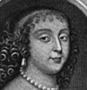
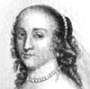
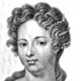
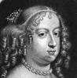
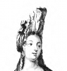

Alison Booth
Williams, Hugh Noel. Five Fair Sisters: An Italian Episode at the Court of Louis XIV. London: Hutchinson, 1906; 1907. New York: G.P. Putnam's Sons, 1906.
TOC: Laure Mancini; Olympe Mancini, Countess de Soissons; Marie Mancini Colonna, Princess di Palliano; Hortense Mancini; Marie Anne Mancini, Duchess de Bouillon; Anne of Austria, Queen of France; Laura Martinozzi, Duchess of Modena; Anne Marie Martinozzi, Princess di Conti.
NOT= male-female, history. Yet much is biographical, and includes details from Marie's memoirs and Anne of Austria's correspondence. Title page identifies Williams as author of biographies of Mesdames Recamier, Pompadour, de Montespan, du Barry, as well as the "French Stage" volumes listed in CBW. An extensive index follows final page of last chapter (414), and there is a long list of illustrations but no table of contents per se. Chapters have initial summaries. A group biographical history about Anne of Austria (Queen Mother) and her favorite, Cardinal Mazarin, who imported his nieces and some nephewes from Rome as pawns in alliances with powerful French families.
-
Anne Marie Martinozzi, Princesse de Conti
-
Laure Mancini Duchesse de Mercoeur
-
Marie Mancini
-
 Anne of Austria, Queen of France
Anne of Austria, Queen of France -
Maria Theresa of Austria, Queen of France
-
 Marianne Mancini, Duchesse de Bouillon
Marianne Mancini, Duchesse de Bouillon -
 Marie Mancini Colonna, Principessa di Palliano
Marie Mancini Colonna, Principessa di Palliano -
 Marie Louise D'Orleans, Queen of Spain
Marie Louise D'Orleans, Queen of Spain -
Olympe Mancini, Comtesse de Soissons
Search OCLC WorldCat for this title.
Search Google Books for this title.